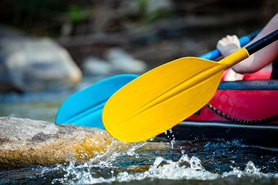
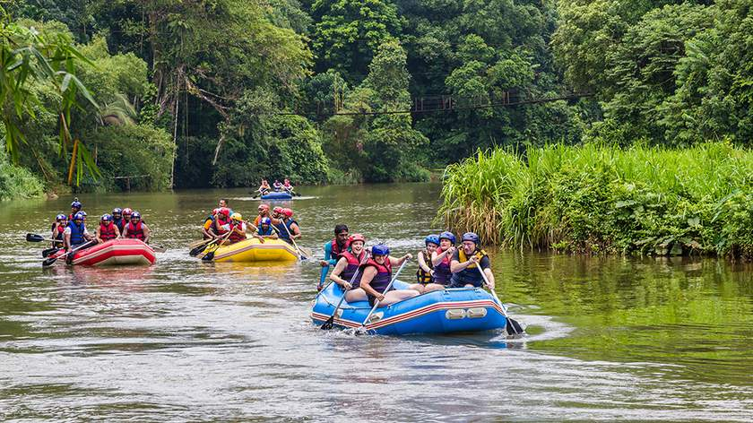

At Dry Oar Rafting, our mission is to provide exhilarating, safe, and memorable white water rafting experiences. We believe that spending time on the river brings people together and builds lifelong appreciation for nature.


At Dry Oar Rafting, our mission is to provide exhilarating, safe, and memorable white water rafting experiences. We believe that spending time on the river brings people together and builds lifelong appreciation for nature.
Founded in 2004 by passionate outdoor adventurers, Dry Oar Rafting started with just two rafts and a dream to share the untamed beauty of scenic canyons. Over the past two decades, we have guided thousands of families, thrill-seekers, and nature enthusiasts through some of the most breathtaking rapids in the country, maintaining the highest standards of river safety and environmental stewardship.